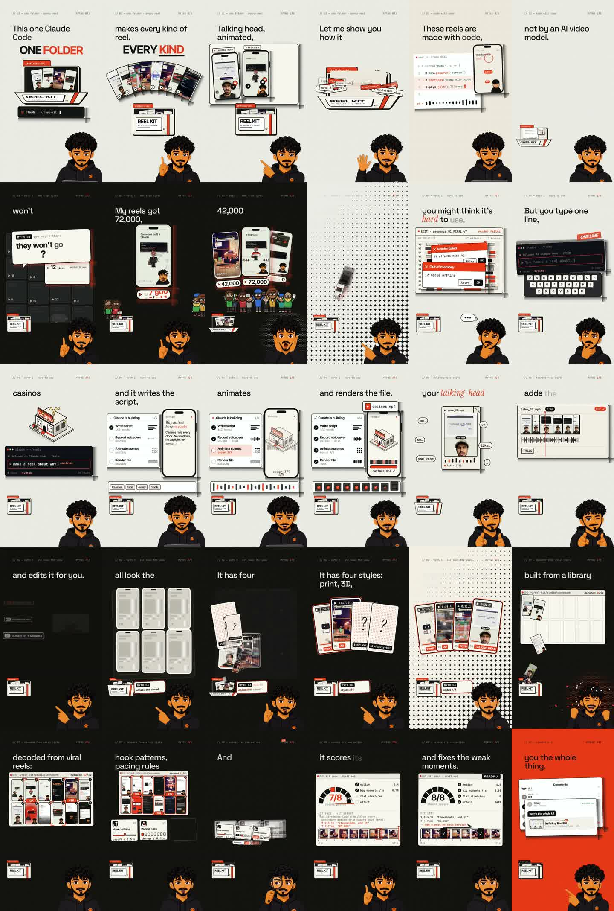
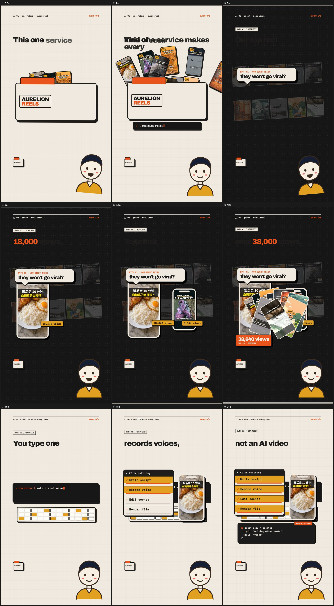
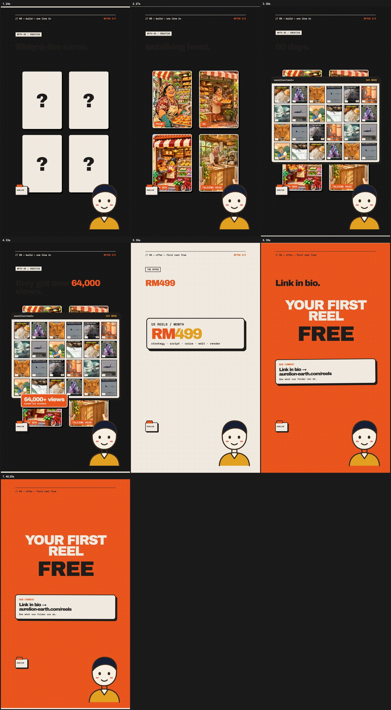

A reusable prompt for the myth-busting / folder pop-out / host / halftone look. Fill in the {{...}} fields, then paste the blocks in order. Each category is a separate block, so you can change one without touching the rest.



Attach the reference sheet with the prompt (-i ref_sheet.jpg for Codex, or drag it into Claude) so it copies the effects, not just the words.
/reel {{TOPIC}} print. Use the folder style: 3 myths, a host, top-left kinetic captions, light and dark scenes alternating, a red CTA end screen. Follow the blocks below.
SCRIPT
- Length {{30-45}} s, about 2.5 words per second. Show the word count.
- Hook (0-3 s): "This one {{THING}} {{BIG PROMISE}}." It must be on screen at frame 0.
- 3 myths, each opened by "First / Second / Third, you might think {{OBJECTION}}." and then busted with ONE proof line each.
- Proof uses only real numbers from {{SOURCE}}. Put anything unsure under "Facts check" as [UNSURE]. Never invent results, reviews or quotes.
- Ending: the offer ({{OFFER}}) plus ONE call to action ("{{CTA}}").
- Mark the key word in each line with *asterisks* (accent colour).
CHROME (on every scene)
- Thin mono header at y~70: left "// 0N — {{section name}}", right "MYTHS n/3", updated per section.
- Kinetic captions TOP-LEFT (x 120, y 300-420, 64px), word by word from words.json, max 5 words, one accent word.
- Cartoon host (brand/host.svg) bottom-right: hops, tilts and points on beats, and flaps its mouth (host-mouth-open/closed) on spoken words.
- Small brand folder icon bottom-left.
SCENES (pick and order these; each one is timed to a spoken word)
1. FOLDER POP: a big folder labelled "{{BRAND}} {{THING}}". {{ASSETS}} pop out of it one by one (rise, back.out overshoot, slight rotation). A terminal bar types "~/{{slug}}".
2. FAN OUT: the same pictures fan into an arc over the folder. Headline "{{2 WORDS}}".
3. MYTH CARD (dark scene): a speech-bubble card "MYTH 0N · you might think / {{objection}}?" drops in over a dim thumbnail grid.
4. PROOF PHONE: the best picture flies out inside a phone frame, and a view/number badge counts up on the spoken number. The next ones pop in beside it. On the total, everything stacks and a big badge slams.
5. ERROR STACK: fake error dialogs pop in, shake, and get swept away (shows "hard / painful" before the fix).
6. TERMINAL + CHECKLIST: a terminal types a one-line request. An "AI is building" checklist ticks a step on each verb, with a phone filling up beside it.
7. CODE PANEL: a code-editor panel slides in with a chip ("{{claim}}").
8. CARD FLIP (dark scene): 4 face-down "?" cards flip on 4 spoken words to reveal 4 labelled pictures.
9. GALLERY COUNT: a window "{{brand}}/{{thing}} N made" fills fast with a grid of pictures. A total badge slams.
10. PRICE SLAM: the price card "{{OFFER}}" slams in with a squash.
11. RED END SCREEN: the background turns red/orange, a huge "{{CTA HEADLINE}}", and a comment-style card "{{CTA}} → {{URL}}".
STYLE - Light scenes: paper #EFE9DF with a faint grid. Dark scenes: #161616 with a faint dot grid. Alternate them per myth (hook light, myth 1 dark, myth 2 light, myth 3 dark, CTA red). - Accent #E8541C (orange-red), second accent #E2A020 (mustard). Text #1a1a1a on light, #F3EEE6 on dark. - Headlines: heavy grotesk (Archivo Black, then a system fallback), tight letter-spacing. Chrome and terminal: monospace. - Cards: thick dark outline, rounded corners, hard offset shadow. - Transitions: a HALFTONE dot wipe (dots grow to cover the frame, then shrink) between light and dark scenes.
MOTION - Something changes at least every 0.6 s. A real move (pop, fly, drop, slam, shake, hop) happens at least every 1.5 s. - At most 3 full-frame changes in any 5 s (single-object pops don't count). - Default easing back.out (overshoot). Use counts, stacks and flips, never plain fades. - Time every beat to a spoken word with W(word, after) on words.json, always looking forward so repeated words stay in order. - Deterministic: no unseeded random.
LAYOUT / RENDER - 1080x1920, 30 fps, HyperFrames (HTML + GSAP). One paused timeline in window.__timelines["main"]. - All text inside x 120-960. Below y 1248 only decoration, the host and the folder icon. - Media use class="clip" with data-start / data-duration / data-track-index. Voice on track 90. - Follow brand/brand.json rules. Never show any personal IG handle.
SCORE
- Render, then run node scripts/score.mjs reels/{{slug}}.
- Look at score/hook.png and score/sheet.png. Fix anything under 8 (hook clarity, pacing, captions covered, text out of the safe area) and re-render. Max 3 rounds.
- Show final.mp4 with the score.
{{TOPIC}} what the reel is about · {{THING}} what the folder holds (reels, recipes, designs) · {{OBJECTION}} ×3 what viewers doubt · {{SOURCE}} where the real numbers come from · {{ASSETS}} pictures in assets/ · {{OFFER}} price line · {{CTA}} e.g. "Link in bio" · {{URL}}